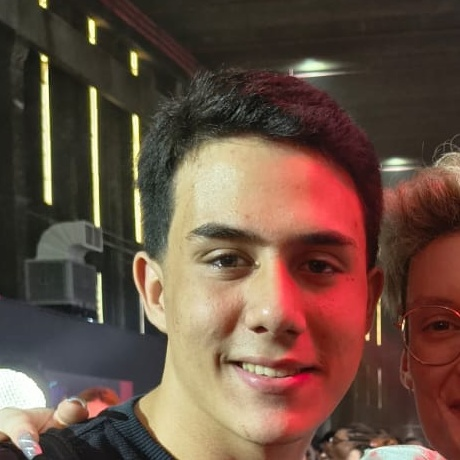

Olá, eu sou o Renato! 👋
Renato Barbosa Aranega — Estudante de Informática para Internet na Etec
Sou apaixonado por tecnologia, lógica de programação e criação de interfaces modernas, intuitivas e acessíveis. Atualmente, dedico minha rotina acadêmica ao aprendizado aprofundado dos fundamentos da web, boas práticas de código e desenvolvimento de soluções digitais de alto impacto.
Meu principal objetivo profissional é ingressar no mercado de trabalho na área de Tecnologia da Informação (TI), integrando equipes inovadoras onde eu possa evoluir tecnicamente, colaborar na resolução de problemas reais e construir softwares de excelência.
HTML5 Semântico
CSS3 Moderno
JavaScript Vanilla
Git & GitHub
Design Responsivo
VS Code